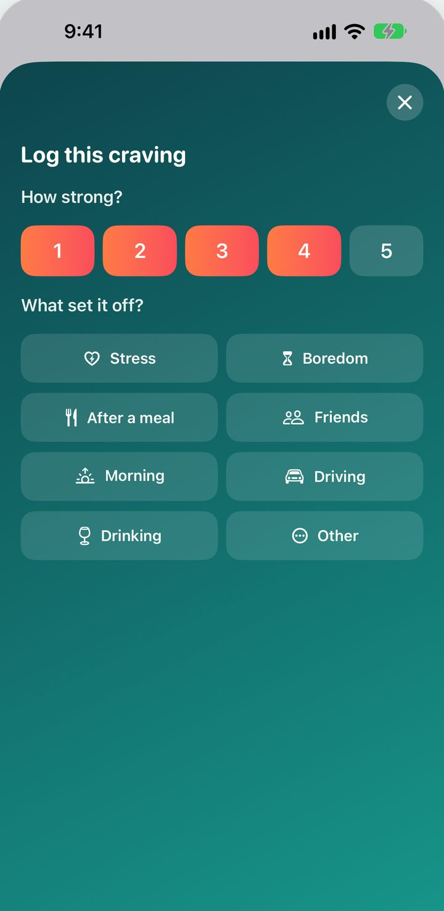

For the moment it hits
Log it in two taps.
How strong it is, and what set it off. That's all it takes, so you can get back to riding it out.
- A Home Screen and Lock Screen widget that opens straight to craving help.
- A Siri Shortcut that does the same.